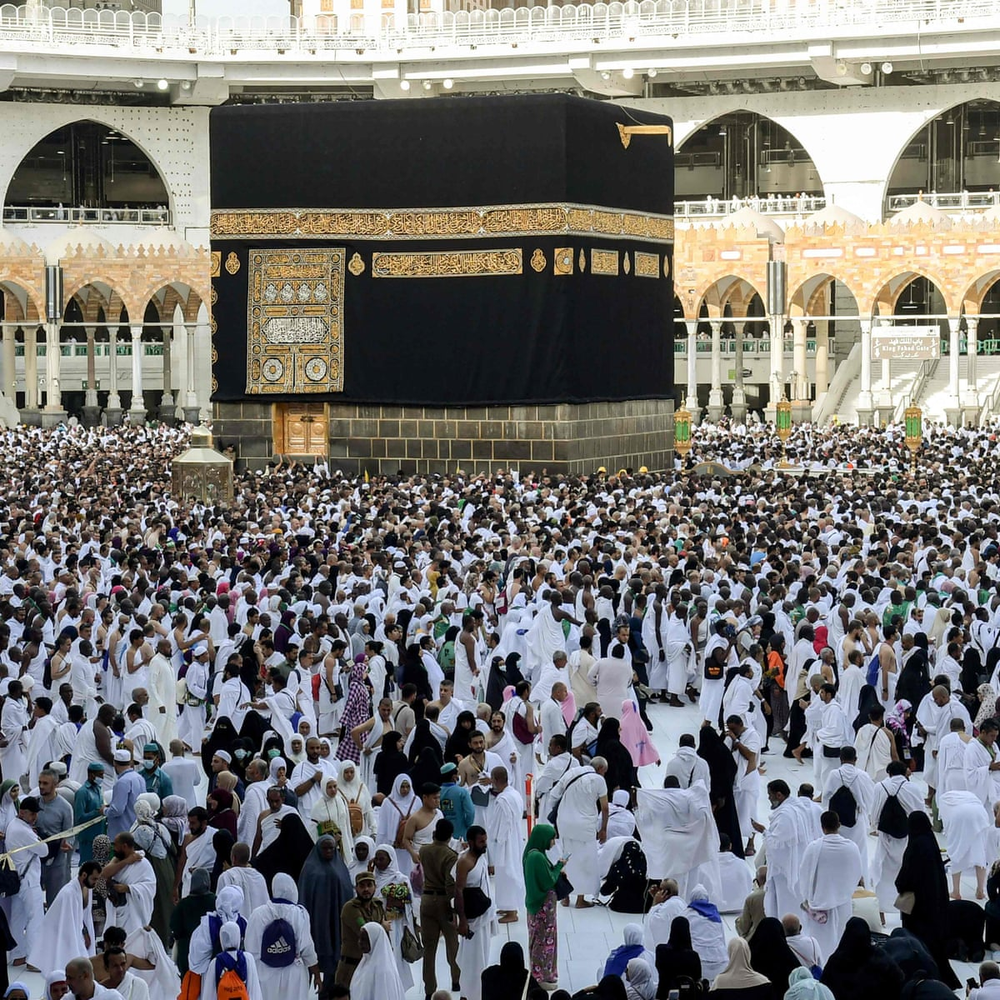

الحج
الحج هو زيارة المسجد الحرام في مكة المكرمة وأداء فريضة الحج. فرض الله هذا
الفرض على كل مسلم بالغ، قادر على تحمّل تكاليف الحج. في القرآن:
{و لله على الناس حج البيت من استطاع إليه سبيلا} وقد فرضه الله
الحج لتزكية النفوس، وتربية لها على معاني العبودية والطاعة والصبر،
فضلاً على أنه فرصة عظيمة لتكفير الذنوب، فقد جاء في الحديث عن أبي هريرة:
«من حج هذا البيت فلم يرفث ولم يفسق رجع كيوم ولدته أمه»البخاري ومسلم.
